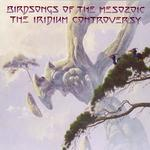

| Artist: | Birdsongs Of The Mesozoic |
| Title: | The Iridium Controversy |
| Label: | Cuneiform Rune 179 |
| Length(s): | 61 minutes |
| Year(s) of release: | 2003 |
| Month of review: | [11/2003] |
| 1) | Primordial Sludge | 5.45 |
| 2) | The Iridium Controversy: Before | 2.59 |
| 3) | The Iridium Controversy: After | 5.30 |
| 4) | Make The Camera Dance | 7.19 |
| 5) | This Way Out | 4.21 |
| 6) | Lost In The B-Zone | 4.47 |
| 7) | Tectonic Melange | 4.08 |
| 8) | Sherpas On Parade | 6.03 |
| 9) | 100 Years Of Excellence | 5.42 |
| 10) | Race Point | 3.37 |
| 11) | Centrifuge | 4.08 |
| 12) | The Beat Of The Mesozoic - Part 1 | 6.14 |
The Iridium Controversy: Before opens with slowly building piano melody. There are elements of the minimalists here, and a sense of grandeur as well, quite powerful and tense at times and with a great feeling for melody. Very good. On The Iridium Controversy: After, the same feel arises, but lower, here the bass plays a prominent role, with the flute and piano dancing along. A tense undercurrent is present though, in the vein of Univers Zero. Bands on Cuneiform are often wary of guitars, but here some good bits come through. Strange how the marimba (like stuff) always reminds me of Zappa.
The minimalistic approach returns on Make The Camera Dance, which also has some Crimsonesque guitar lines. The middle part is a bit more mellow, with lots of meandering wind work. The programmed percussives add some helicopter like sounds which make the song more interesting in a way. The organ rides high on This Way Out, yielding a warmer sound. This is a slow track, a bit lazy, but not without some dissonant elements. Plenty of dark percussively played piano to give the song some of its darker overtones. But it functions nicely as a breather from the more hectic pieces that have gone before.
The music becomes quite urgent on the pacey Lost In The B-Zone. Again a strong piece of work, lots of piano, programmed effects and the sax setting in for some soft wailing. The pace does not let off on this one. On Tectonic Melange the tension rises high with piano lines full of foreboding. Sherpas On Parade brings us little new, there is however a percussive world music feel that pervades this one. Something I also noticed at times in some of the other songs. There also some very playful parts here, a bit of Comedy Capers.
100 Years Of Excellence has those saxes again, but later the flute gives the music more of a wind orchestra feel, more classical than otherwise. Race Point has a bit of the feel of Frippian soundscapes, but the overal sound is more classical than that. It is not surprising now that the Genre indication in the Gracenote CDDB is Classical for this band. A very quiet track.
With Centrifuge one expects something quicker. Again a strong opening with telling melodies and rhythms. The Beat Of The Mesozoic - Part 1 is the closer, also with a strong sense of urgency and danger. The middle part is extremely percussive, comparable to the mile long Cleanse by Neurosis.